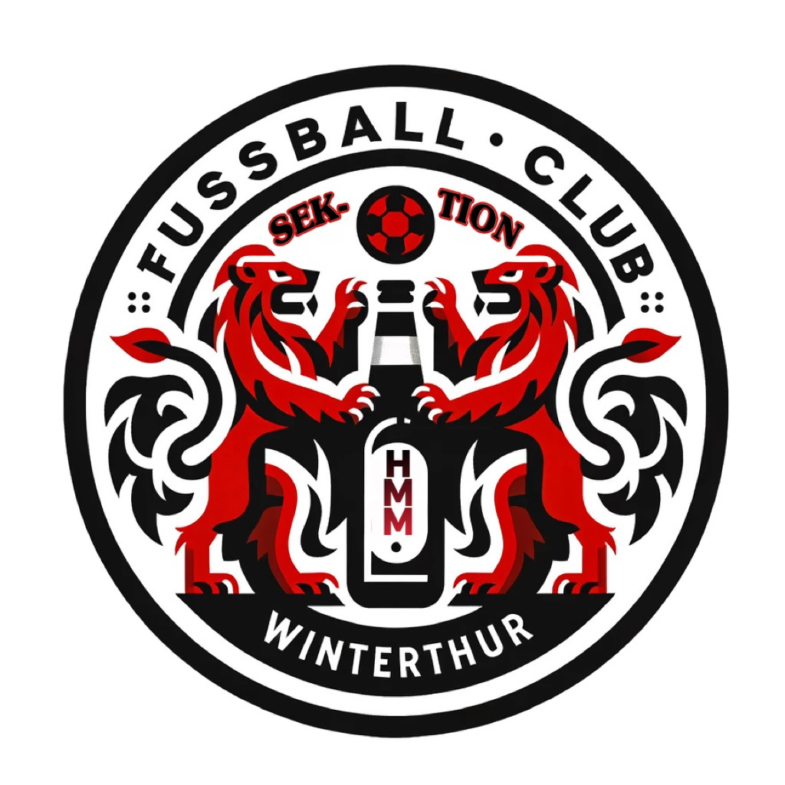
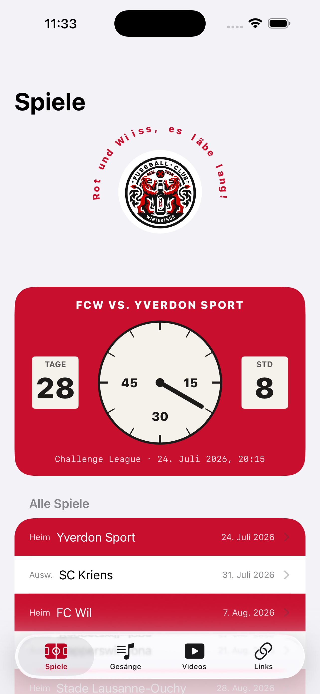

Die inoffizielle Fan-App der Sektion HMM des FC Winterthur – alles, was die Kurve braucht, in einer App. 🔴⚪️
Kompletter Spielplan mit Countdown im Stil der legendären Schützenwiese-Uhr. Spiele in den Kalender übernehmen und Erinnerungen vor dem Anpfiff.
Alle Gesänge mit Liedtext (durchsuchbar) und die HMM-Songs zum Anhören – direkt in der App.
Choreos, Songs und Clips der Sektion und des FCW.
Tickets, Fanshop, Tabelle, Bierkurve Winterthur und mehr – plus das HMM-Logo zum Download.
Der Countdown zum nächsten Spiel als Widget direkt auf dem Home-Bildschirm.
Songs und Videos mit einem Tipp in die WhatsApp-Gruppe der Sektion teilen.
